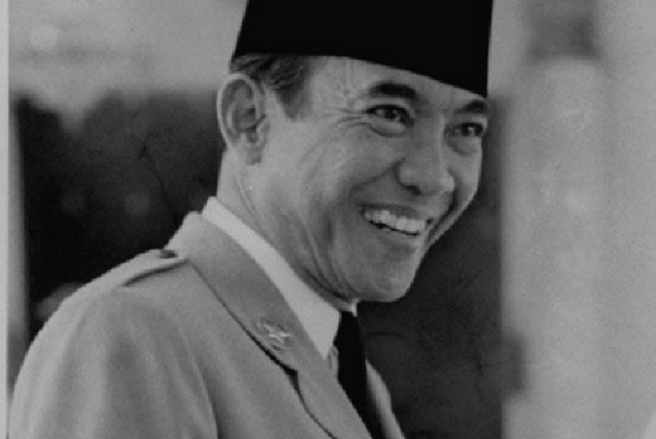

Biografi
Ir. Soekarno atau akrab dipanggil Bung Karno lahir pada 6 Juni 1901 di Surabaya, Jawa Timur dengan nama kecilnya Kusno Sosrodihardjo dan wafat pada 21 Juni 1970 di Jakarta. Bung Karno adalah anak dari pasangan Raden Soekemi Sosrodihardjo dan Ida Ayu Nyoman Rai. Karena sakit-sakitan, Soekarno kecil dirawat kakaknya bernama Raden Hardjodikromo di Tulungagung. Soekarno kembali tinggal dengan bapak dan ibunya pada 1909 di Mojokerto.
Di Mojokerto itulah sang ayah ditugaskan sebagai kepala Eerste Inlandse School dan Soekarno pun sekolah ditempat itu. Sejak tinggal kembali bersama orang tuanya, Soekarno mengganti namanya dari Kusno menjadi Soekarno agar dirinya tidak sakit-sakitan lagi dan dapat tumbuh dengan sehat. Sejak kecil Soekarno sudah menjadi anak yang berprestasi bahkan mampu menguasai banyak bahasa. Itulah sebabnya kecerdasan Soekarno dikenal oleh dunia.
Di Kediaman Cokroaminoto, Soekarno muda mulai banyak belajar politik dan banyak berlatih pidato. Di sanalah Soekarno mulai kenal dan berinteraksi dengan tokoh-tokoh hebat, seperti Dr. Douwes Dekker, Tjipto Mangunkusumo, dan Ki Hajar Dewantara. Merekalah pemimpin organisasi National Indische Partij saat itu.
Bersekolah di HBS memberi banyak pengalaman dan pelajaran bagi Soekarno, hingga akhirnya lulus dan tahun 1921. Setelah itu Soekarno pun kembali pindah tempat tinggal, yakni ke Bandung dan tinggal bersama Haji Sanusi untuk melanjutkan pendidikannya di Technische Hooge School (THS) jurusan teknik sipil atau kita kenal sekarang sebagai kampus ITB. Disanalah Soekarno mendapatkan gelar insinyur-nya dengan lulus pada tanggal 25 Mei 1926.
Soekarno diwisuda bersama dengan delapan belas unsur lainnya tepat saat Dies Natalis ITB yang ke-61 pada 3 Juli 1926. Menurut Prof. Jacob Clay Sebagai ketua Fakultas di kampus tersebut menyatakaan kebanggannya karena ada 3 orang insinyur orang Jawa, Yakni Soekarno, Anwari, dan Soetedjo, dan gelar insinyur dari daerah lainnya.
Di masa hidupnya, Soekarno telah menikahi sejumlah perempuan, yakni Fatmawati, Hartini, Ratna Sari Dewi, Kartini Manopo, Haryati, Yurike Sanger, dan Heldy Djafar. Atas pernikahannya tersebut, Soekarno dikarunia 11 orang anak. Sebagian keturunan Soekarno pada akhirnya juga ada yang mengikuti jejak sang ayah di dunia politik Indonesia.
Yakni putrinya yang bernama Megawati Soekarnoputri yang pernah menjabat sebagai presiden ke-5 RI, Rachmawati Soekarnoputri, dan Sukmawati Soekarnoputri. Putranya yang pertama dengan Fatmawati, Guntur Soekarnoputra justru tidak terjun ke dunia politik seperti dirinya dan adik-adik perempuannya.
20 Coments..
Biografi Wakil Presiden Indonesia Pertama, Mohammad Hatta
Pre Article
Biografi salah satu tokoh Indonesia, Bung Hatta
Nxt Article